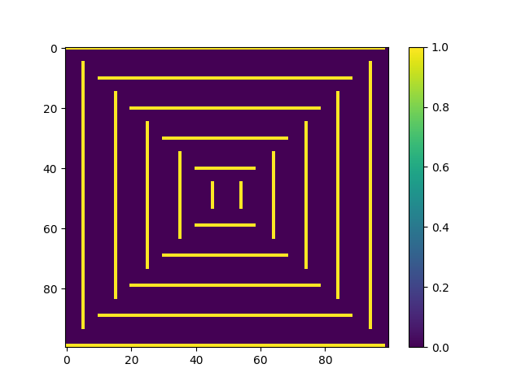
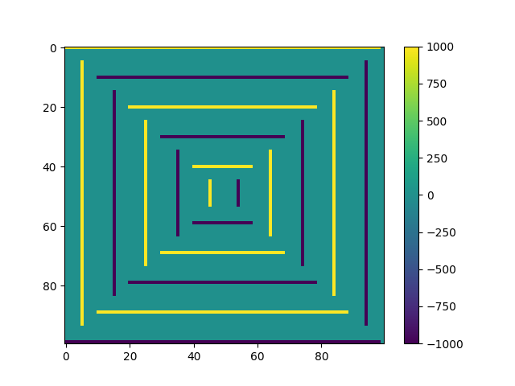
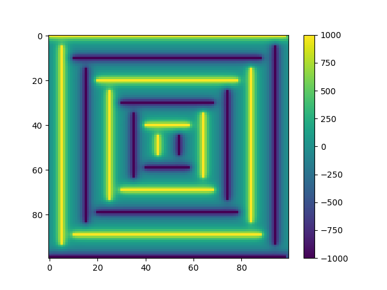
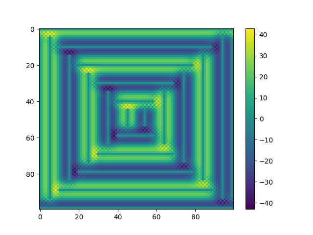
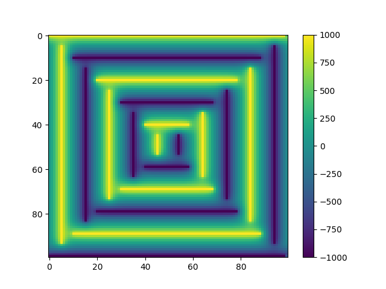
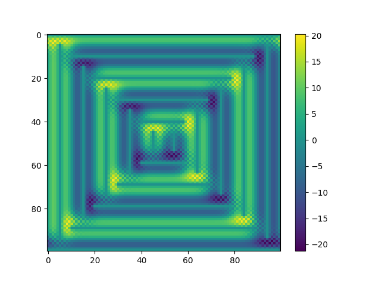
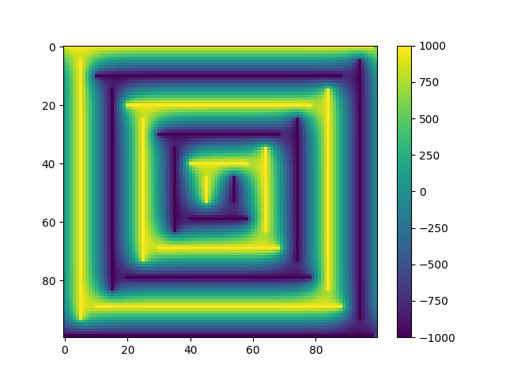
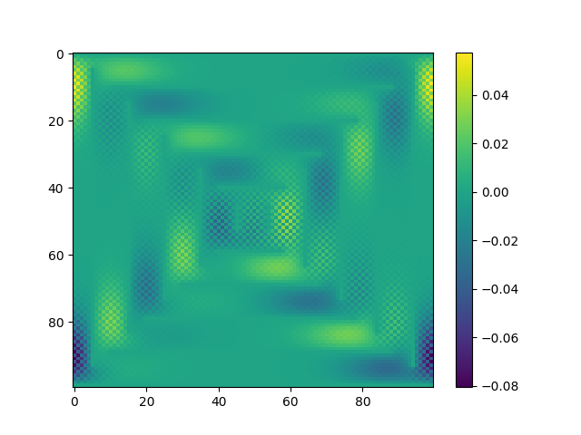
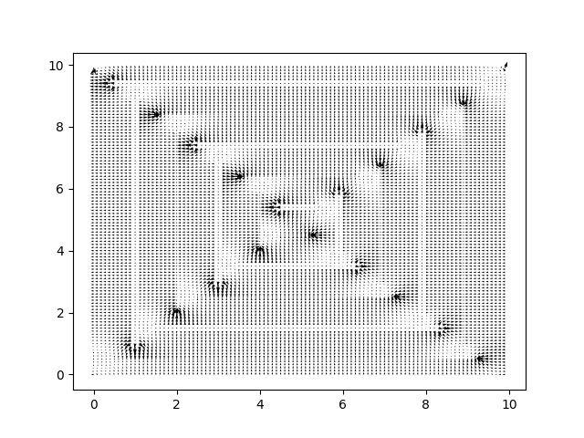

pochoir user manual
Table of Contents
Introduction
This describes how to use pochoir.
Following sections:
- getting started
- usage tutorial
- developer guide
Remaining subsections describe pochoir concepts
Overview of calculating response functions
- describe the steps and data products
FDM for Laplace boundary value problem
- characteristics of problem where FDM is applicable (grid vs geometry feature sizes)
- define terms
- domain
- boundary value problem
- boundary and initial values and boundary condition
- initial value problem
- paths
RK4/5 for paths initial value problem
Getting started
Installation
- get package
- venv options (
python -m venv venv ; source venv/bin/activateandecho layout python3 > .envrc; direnv allow) - install (
pip install -e .orpip install git@github.com:wirecell/pochoir.gitor whatever) - testing (
pytest)
General usage
- CLI help
- general CLI vs command-level options
- environment variables (
POCHOIR_STORE)
Using CPU vs GPU
- devices: "best" vs "numpy" vs torch "cpu" and "gpu" (still needs actual implementation to pick "best" or otherwise globally set)
- selection via CLI options
- when to care what device is used
Data and its storage
- main data objects
- domain
- scalar fields
- vector fields
- path start points
- full paths
- responses
- separate input and output vs input+output store
- HDF5 vs NPZ+JSON+directory
- latter can work with snakemake or similar
- converting between the two
- export formats
- vtk
- input formats
- invent something for electrode shape description, probably JSON based
- maybe jsonnet
- do we allow import of data object from, say, external NPZ?
- invent something for electrode shape description, probably JSON based
Tutorial
This tutorial walks through the individual steps of calculating field responses for a 2D problem and ends with an example of how to automate the entire workflow.
Define the problem domain
A domain of a problem is the space on which it is defined. A pochoir
domain is a finite, uniform, rectilinear (Cartesian) grid of points.
In general, the grid may be N-dimensional though practical problems
will require either 2D or 3D (or possibly a mix of both).
A domain can be created simply with the pochoir domain command:
pochoir domain --help
Usage: pochoir domain [OPTIONS] NAME
Produce a "domain" and store it to the output dataset.
A domain describes a finite, uniform grid in N-D space in these terms:
- shape :: an N-D integer vector giving the number of grid
points in each dimension. Required.
- origin :: an N-D spatial vector identifying the location of
the grid point with all indices zero.
- spacing :: a scalar or N-D vector in same distance units as
used in origin and which gives a common or a per-dimension
spacing between neighboring grid points.
- first :: an N-D integer vector giving the first valid index in
each dimension (which is almost always the default, 0)
A vector is given as a comma-separated list of numbers.
Note: this description corresponds to vtk/paraview uniform rectilinear
grid, aka an "image".
Options:
-s, --shape TEXT The number of grid points in each dimension
-o, --origin TEXT The spatial location of zero index grid point (def=0's)
-s, --spacing TEXT The grid spacing as scalar or vector (def=1's)
-f, --first TEXT The first indices for each dimension (def=0's)
--help Show this message and exit.
As shown in the help, each of the four vectors can be given on the
command line but only shape is required if the defaults are
sufficient. The size of the shape vector sets the dimension of the
domain.
pochoir domain --shape 100,100 --spacing 0.1 adomain ls -l store/adomain/
total 16 -rw-rw-r-- 1 bv bv 280 Mar 19 15:35 first.npz -rw-rw-r-- 1 bv bv 282 Mar 19 15:35 origin.npz -rw-rw-r-- 1 bv bv 280 Mar 19 15:35 shape.npz -rw-rw-r-- 1 bv bv 284 Mar 19 15:35 spacing.npz
This listing assumes the NPZ based store is used. If using an HDF5 store,
these four arrays are stored as datasets in an HDF5 group named
adomain.
Once defined, a domain is referenced by the given name (adomain here).
Define initial and boundary value arrays
An initial value array provides a scalar field from which the FDM solution begins. Each element holds either a known, applied potential or an initial guess. The boundary value array elements take a value of 1 or 0. Unity indicates the corresponding element in the initial value array should be considered a fixed applied potential and all others are free to be adjusted by the FDM.
Example initial and boundary value arrays
A number of hard-wired examples are provided as examples:
pochoir example --help pochoir example list pochoir example caps
Usage: pochoir example [OPTIONS] NAME Generate a boundary and initial array example (try "list") Options: --help Show this message and exit. caps sandh
Here, the caps example is created. It represents a fictional set of
parallel plate capacitors. The example populates arrays named
caps-initial and caps-boundary and they may be visualized:
pochoir plot-image caps-boundary docs/caps-boundary.png pochoir plot-image caps-initial docs/caps-initial.png


Custom electrode description
For arbitrary problems, the user may provide a description of the
electrodes and their applied potentials and pochoir will render them
to the domain grid.
This is work still to be provided.
Solve Laplace equation
The Laplace equation can be solved by specifying initial and boundary value arrays, boundary conditions and convergence requirements.
pochoir fdm --help
Usage: pochoir fdm [OPTIONS] SOLUTION ERROR
Solve a Laplace boundary value problem with finite difference method
storing the result as named solution. The error names an output array to
hold difference in last two iterations.
Options:
-i, --initial TEXT Name initial value array, elements include boundary
values
-b, --boundary TEXT Name the boundary array, zero value elemnts subject
to solving
-e, --edges TEXT Comma separated list of 'fixed' or 'periodic' giving
domain edge conditions
--precision FLOAT Finish when no changes larger than precision
--epoch INTEGER Number of iterations before any check
-n, --nepochs INTEGER Limit number of epochs (def: one epoch)
--help Show this message and exit.
We may make a trial solution which we save it and its error to caps-solution1 and caps-error1 arrays, respectively
pochoir fdm -e periodic,periodic \
-i caps-initial -b caps-boundary \
--epoch 10 -n 1 \
caps-solution1 caps-error1
maxerr: 43.046966552734375
The maximum difference between the solution at the penultimate and
last iteration is the printed maxerr.
We can visualize solution and error:
pochoir plot-image caps-solution1 docs/caps-solution1.png pochoir plot-image caps-error1 docs/caps-error1.png


The error is rather high and although this domain is small which makes the solution fast, we may reuse this first solution as the initial value array for continued solution:
pochoir fdm -e periodic,periodic \
-i caps-solution1 -b caps-boundary \
--epoch 10 -n 1 \
caps-solution2 caps-error2
maxerr: 21.263214111328125
pochoir plot-image caps-solution2 docs/caps-solution2.png pochoir plot-image caps-error2 docs/caps-error2.png


We can continue this manual, high-level iteration or take a guess for
the total number of internal iterations to reach the desired error
level. Or, we may tell pochoir fdm to continue until either the
requested number of epochs are reached or the maxerr falls below a
requested precision. When using a precision, it is checked only after
each epoch is complete and so the result will typically be
over-precise.
pochoir fdm -e periodic,periodic \
-i caps-solution2 -b caps-boundary \
--epoch 10 -n 100 --precision 0.1 \
caps-solution3 caps-error3
maxerr: 13.02484130859375 maxerr: 8.48162841796875 maxerr: 5.6507568359375 maxerr: 3.921722412109375 maxerr: 2.8282470703125 maxerr: 2.056884765625 maxerr: 1.50787353515625 maxerr: 1.12823486328125 maxerr: 0.855926513671875 maxerr: 0.65093994140625 maxerr: 0.496307373046875 maxerr: 0.37939453125 maxerr: 0.2906494140625 maxerr: 0.2232666015625 maxerr: 0.17201995849609375 maxerr: 0.13336181640625 maxerr: 0.10352325439453125 maxerr: 0.08056640625
The solution is reached prior to 100 epochs. Again, let's see it:
pochoir plot-image caps-solution3 docs/caps-solution3.png pochoir plot-image caps-error3 docs/caps-error3.png


3D Laplace
- change in args w.r.t. 2D
- understand time/resource scaling with 2D
- visualize (matplotlib and paraview)
Use 2D as boundary condition for 3D
- derive 3D boundary values to 2D and merge with 3D boundary values
- understand precision of 2D as a function of 3D domain size
Weighting fields
The fantasy example of caps sets boundary values applicable for
calculating the "real", applied potential. The overall field response
is tabulated for each sensitive electrode by calculating that
electrode's weighting potential. Thus we must apply the pochoir fdm
command as above to a boundary value which sets the grid points on the
sensitive electrode to unity and all others to zero.
FIXME: How best to specify this and manage the results is a WIP.
Calculate and visualize gradient fields
The gradient of a scalar field gives a vector field. The E-field is the gradient of the applied potential scalar field and is needed for the next step of calculating paths. The W-fields, one per sensitive electrode are needed for the step after, calculating responses to paths.
The pochoir grad command will calculate and store the gradient
allowing for visualization and later use.
pochoir grad --help
Usage: pochoir grad [OPTIONS] SCALAR VECTOR Calculate the gradient of a scalar field. Options: -d, --domain TEXT Use named dataset for the domain, (def: indices) --help Show this message and exit.
pochoir grad \
--domain adomain \
caps-solution3 caps-efield3
We may visualize this field with:
pochoir plot-quiver \
--domain adomain \
caps-efield3 docs/caps-efield3.png

- 2D and 3D matplotlib
- paraview
Path initial value problem
- specify problem to solve
- specify initial value
- apply solver
- store result
- visualize (matplotlib and paraview)
Calculate responses
- combine path and fields for schockley-ramo
- exploit symmetry and equivalences
- visualize
Convert to Wire-Cell
Automation with Snakemake
- full chain, repeatable, performant processing
- what knobs to tune